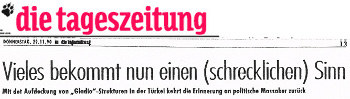

Dış Basında Talat Turhan’dan söz eden yazılardan birkaçı

27 Kasım 1990 tarihinde “Politik İstikrar Hareketi” konulu
Ömer Erzeren-Talat Turhan söyleşisi
“Koyun Postunun Altındaki Örümcek”,
Alman Der Spiegel Dergisi ile 26 Kasım 1990’da söyleşi
“Modern Savonarola”